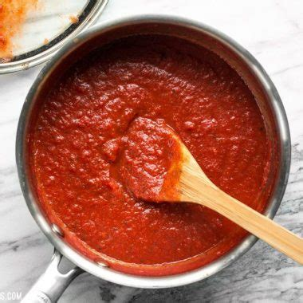

Pizza Sauce

Description
A tasty, easy to make no-cook pizza sauce. Also works well as a base for pasta sauces
Ingredients
- 1 can Tomato Sauce
- 1 can Tomato Paste
- 1/2 tsp Garlic Powder
- 1/2 tsp Onion Salt
- 1/2 tsp Pepper
- 1/4 tsp Oregano
- 1/4 tsp Basil
- 1/4 tsp Marjoram
Optional (for those who enjoy a spicy sauce)
- 1/4 tsp Red Pepper Flakes
- 1/8 tsp Cayene Pepper
Steps
- Pour tomato paste into a medium sized bowl
- Gradually mix in 1/2 of the Tomato Sauce (this helps prevent lumps)
- Add the remaining Tomato Sauce and stir
- In a seperate small bowl mix all of the spices together
- Add Spices to Sauce and mix thoroughly